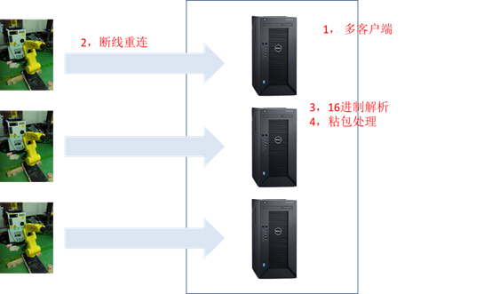
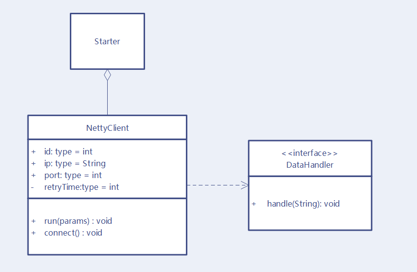
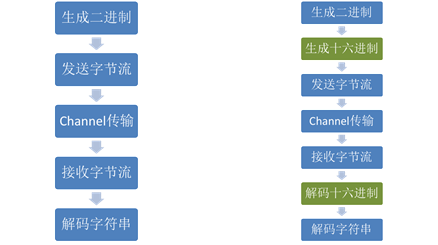
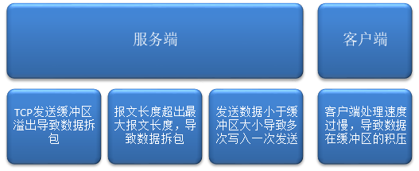
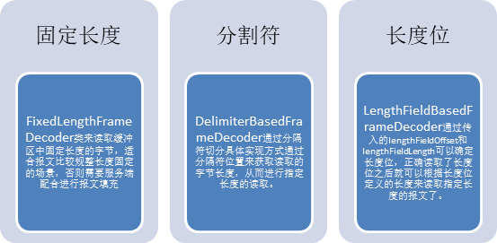

基于Netty的边缘数采
在设备数据采集方面，我们已经探索出一套成熟的做法即在设备侧部署一个边缘程序，通过定时拉取的机制到工控机如PLC的指定位置获取数据。但是对于机器人来说，不同型号的机器人控制设备都有自己不同程度的封装，我们需要严格按照机器人设备的数据开放方式进行定制化实现才有可能正确的获取到数据。
就我们这次研究的FANUC机器人来说，它的数据是通过内置的Socket服务端发送出来的。因此我们的数采方案是在边缘端部署一个相应的Socket客户端与之进行通信，获取数据并进行后续处理。
技术方案
由于团队的主技术栈是Java， 所以我们决定选用Netty作为构建网络通信客户端的框架。至于为什么使用Netty而不是原生的Java NIO不是本文讨论的重点，可以简单粗暴的认为Netty就是比原生的Java NIO更贴近实际应用场景。
通过分析需求，我们得出如下技术细节分解：
其中多客户端体现了边缘端管理维度的需求，断线重连机制是通讯维度的要求，数据解析和粘包处理是数据处理维度。接下来我们就针对技术细节进行详细的可行性验证。
技术细节
多客户端
在Netty中启动一个客户端简单到只需要三句话，虽然链式调用的一句话确实有点长。原始的Netty客户端建立过程如下：
1 | Bootstrap bootstrap = new Bootstrap(); |
考虑到多客户端的需求，我们对Netty客户端进行了封装，封装后的客户端更加易于管理。
Starter是启动类，负责读取配置文件并初始化客户端，通过Map<String, NettyClient>的数据结构来管理所有的客户端。示例代码如下：
1 | File[] files = FileUtil.getPropertiesFileArr(); |
NettyClient是封装后的客户端，通过配置文件构造，将配置注入到属性中。DataHandler是数据处理类，主要负责报文解析和数据发送后台数据的工作。每个NettyClient聚合一个DataHandler用于数据处理，避免了并发问题符合Netty串行处理的设计思想。
断线重连
针对断线重连功能我们聚焦两个关注点，
首次连接失败的重试
首次连接我们通过对Connect事件加入Future Listener实现，在Future Listener中监听isSuccess标识位可以获取到连接状态，从而确定下一步动作。加入retryTime字段的控制，当重试次数达到一定次数后降低重试的频率，一定程度上节省资源。
1
2
3
4
5
6
7
8
9
10
11
12
13
14
15
16
17
18
19bootstrap.connect(ip, port).addListener((ChannelFuture futureListener)->{
final EventLoop eventLoop = futureListener.channel().eventLoop();
if (!futureListener.isSuccess()) {
// 10s秒之后重连
retryTimes ++;
if(retryTimes <= 10) {
eventLoop.schedule(() ->
doConnect(new Bootstrap(), eventLoop), 10, TimeUnit.SECONDS);
}else {
//超过10次后改成1分钟重试
eventLoop.schedule(() ->
doConnect(new Bootstrap(), eventLoop), 1, TimeUnit.MINUTES);
}
} else {
retryTimes = 0;
LOG.info("客户端[{}]与服务器连接成功",id);
}
});非首次连接的断线重连
当连接过程中发生断线会触发Inactive事件，在Client Handler的channelInactive监听中进行处理即可。
1
2
3
4
5
6final EventLoop eventLoop = ctx.channel().eventLoop();
//获取配置信息
NettyClient client = getNettyClientByCtx(ctx);
if(client != null) {
client.doConnect(new Bootstrap(), eventLoop);
}
16进制解析
在服务端和客户端通信的过程中通常采用字节流，Netty在接收端通过Pipeline加入编解码器的方式完成字节流和对象之间的转换。具体代码如下：
1 | ChannelPipeline pipeline = socketChannel.pipeline(); |
这里的StringDecoder是字符串解码器，字节流通过解码器的解析就可以转换成String类型，从而方便后续的处理。我们遇到的问题是服务端发送的是16进制数据，因此我们需要的是一个16进制解码器，下面是我们对于两种处理过程的比较。
由此可以看出和一般的处理差异在于服务端多了16进制编码过程，导致客户端也要相应的增加16进制的解码器，考虑实现方便我们将16进制解码器和字符串解码器合并成一个HexDecoder。在ClientInitHander中使用HexDecoder替换原来的StringDecoder。
而HexDecoder的Decode方法主要就是做了两件事情a) 字节到HexString b) HexString到String，具体实现如下：
1 | protected void decode(ChannelHandlerContext ctx, ByteBuf msg, List<Object> out) throws Exception { |
通过以上的实现16进制数据的解析问题是解决了，我们不禁要好奇一下服务器为啥要弄成16进制传输呢？
结合网上的讨论，下面两点是我比较认可的
- 机器人内部的数据都是二进制01形式的，二进制和十六进制之间转换比较容易
- 相对十进制来说，十六进制的数据可读性更强，如Ox1064，很容易的看出高四位是0001而这个位置一般会放一些标志位。
粘包处理
粘包是指客户端读取的报文不是一个完整的报文，大多数情况会和拆包结对出现。举个例子，我们的报文结构是
1 | <Robot><Item1></Item1></Robot><Robot><Item1> |
而下一次收到的报文就可能是：
1 | </Item1></Robot><Robot><Item1></Item1></Robot> |
粘包的出现由两方面因素构成：
针对粘包现象，Netty提供了三种解决思路，
了解了三种解决思路之后，我们发现固定长度和长度位两种方案对于服务端都需要改造，而分隔符的解决思路很好的契合了我们这种结构性很强的报文。最终我们选用了DelimiterBasedFrameDecoder，在ChannelInitHander中将Decoder加入Pipeline即可：
1 | ChannelPipeline pipeline = socketChannel.pipeline(); |
DelimiterBasedFrameDecoder需要传入三个参数。
- 第一个参数1024是定义的最大字节长度，当报文长度超出1024，则丢弃该段报文，这个参数根据实际情况调整；
- 第二个参数false表示分隔符不被忽略也就是说分隔符也是作为报文的一部分需要读取。
- 第三个参数是传入的分隔符，我们选择结束符作为分隔符。
通过DelimiterBasedFrameDecoder的引入，我们的报文粘包拆包问题得到了解决。通过分隔符确保在客户端读缓冲区的数据是按照一个完整报文的分段被客户端读取，这种方式规避了服务端改动的复杂性，也避免了服务端和客户端同时修改的不一致性，在数据结构性很强的时候优先选择使用。
总结展望
在边缘数采的实现中，我们通过基于配置的客户端初始化方案，可以在一个边缘端管理多个客户端程序。通过断线重连机制确保了连接的高可用。16进制数据解析和粘包处理确保可以接收到正确的报文进行后续处理。
通过以上技术细节的实现，最终我们基于Netty搭建了一套符合FANUC机器人数采要求的边缘数采客户端。